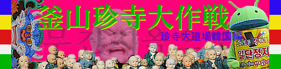

釜山珍寺大作戦
２０１２年の珍寺大道場は釜山からお届けする。
思えば初の韓国修行である。
韓国についてはあまりにも近すぎて油断していたというか、基本的な知識さえほぼ皆無だったことに気付き、我ながら愕然。
もちろん韓流スターとか韓流アイドルとかほぼ知らず、釜山のホテルでで観た日本の紅白歌合戦で東方神起が２人になったいうのを初めて知った位の韓流オンチですいやせん。
釜山にしても同様、韓国の南にあって福岡と下関から船がある。といった程度の認識。
あとは大きい港町で、日韓ワールドカップの抽選会があって、生きてるタコを食べて口の中で吸盤が吸い付いてイテテ…ああ、昔チョーヨンピルっていたなー
…こんな程度です。
で、実際行ってみると福岡からわずか200ｋｍ程度しか離れてないのに何この異文化。
ひょっとして拍子抜けする位日本と同じだったりしてー、という甘い認識は到着直後に吹っ飛ぶ。
何というか空気が違う。説明しにくいのだが、冬でももやっとした黄沙なのこの空気感、立ち並ぶ高層ビルのエッジの効いてる感。
ピリッとした緊張感。
そして街を埋め尽くすハングル語の看板…全然読めない私としてはお手上げだ。飯屋はどこだ。
あー、ここは海外なんだなー、と当たり前のことを改めて実感した。
でも良く見ると日本に良く似た光景もあちこちで見られるし、場所によっては日本のパラレルワールドっぽい場所もあり、やっぱり隣国なんだなーと思うことも。
そんな釜山で色々遊んで、もとい修行して参りましたよ。
題して

釜山珍寺大作戦 珍寺大道場韓国編
今回は釜山とその近郊オンリー。短期滞在だったからスポットは少な目。
でもね、結構濃いところには行ってきたつもりだよ。
海東龍宮寺；その1
海東龍宮寺；その2
五郎台（オランデ）
甘川洞
峨嵋洞
釜谷ハワイ
おまけ
2012.01.
珍寺大道場 HOME